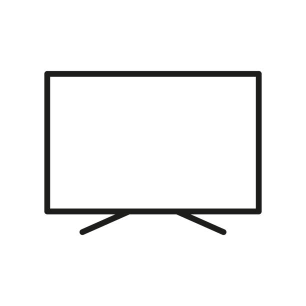

Introducing Ravyn!
Welcome to the blog of Ravyn Mann

My Master's Program
MS Software Engineering, GMU
After completing my undergraduate studies at Virginia Tech I decided to pursue a Master's at George Mason. This program emphasizes formal education in software usability, applied object-oriented theory, software requirements and design, software security, software testing and software maintenance. Since workplace communication and interaction are crucial to successful software projects, coursework in technical writing and organizational interactions are included.
My Job
DevOps Engineer, VTG
VTG delivers force modernization and digital transformation solutions that expand America’s competitive advantage in the modern battlespace. Whether at sea, in the air, on land, in space, or in cyberspace, our agile solutions ensure our Defense and National Security customers meet their most challenging and dynamic mission requirements.
About Me
Hello, my name is Ravyn Mann and I am in the MS Software Engineering program. I am currently pursuing my Masters part time and I am a full time DevOps Engineer with VTG, a naval defense contractor. When I'm not at work or studying I enjoy cooking and practicing making new dishes, and playing video games.
More About Me
-
 Cooking
Cooking
My favorite recipes -
Video Games
My top games -

TV
My favorite shows/movies

Tags
Travel Beach Pasta VT Sims DIY GMU VTG Family News Clothing Shopping Baking Games